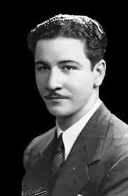

Autore: Virgilio López Lemus.
Durante años se han venido asentando conceptos negativos en torno al género literario llamado poesía. Editores y libreros suelen repetir: la poesía no se vende, la poesía no se lee. Estadísticas poco confiables quieren demostrar tales dudosos asertos. Se suele atribuir la “culpa” de ello a los poetas, a los creadores, a los que no deberían estar atentos a las ofertas y demandas de libros sino a la creación de su arte, arte de las palabras. Por demás, la idea es irrespetuosa para el pueblo cubano, que tiene a la poesía como uno de sus patrimonios de identidad, y que toda la vida, desde que somos nación, la necesitamos.
¿Dónde están, qué se hicieron los poemarios que las editoriales cubanas publicaron hace tres años al menos, a lo largo del país? La poesía no se vende como otros géneros, su venta es más lenta, pero por lo común los lectores asumen el reto de saltar las barreras de que los libros de poesía se coloquen en los sitios menos “estratégicos” de las librerías, en los anaqueles más apartados, incluso más pegados al piso, y que rara vez la promoción de los libros de poesía alcancen el nivel, bajo por cierto, de otros géneros literarios.
En las décadas de 1940 e 1950, José Ángel Buesa descubrió un marketing sencillo: poesia (especialmente la suya) debía venderse en peluquerías, barberías, terminales de transportación, centro de ventas de alimentos y quincallas. Fue un éxito total: la sua poesia, afín con el gusto de masas definidas, se expandió por toda Cuba, y rebasó sus fronteras líquidas.
Por medio de la Organización Nacional de Bibliotecas Ambulantes y Públicas, por la radio y luego por la televisión, Buesa ofreció lecturas a lo largo de todo el país. ¿Es ese un mal ejemplo? ¿Lo es porque pueda no gustarnos su tipo de poesía? Los poetas cubanos siguen deseando asistir más a lecturas en centros de estudio, trabajo y militares. Palpitar más como creadores en la vida nacional. Antes que ser un falso “peligro” de cariz ideológico, pueden ser magníficos ve-hículos de establecimiento de gustos menos violentos y de replanteamientos estéticos que la espiritualidad humana necesita.
Lo dijo Martí: ¿Quién es el ignorante que mantiene que la poesía no es indispensable a los pueblos…? Experiencias de lecturas públicas en la calle, como la que ha puesto en juego Soleida Ríos, contribuyen mucho a que la poesía ocupe su lugar dentro del latir cubano, el que le pertenece inalienablemente.
La poesía cubana es hoy un hecho nacional de poetas de todos los tipos y en todas las localidades del país, y hay que estar atento a ello, porque es un índice muy bueno para diversos análisis, Per esempio, sociológico: ¿por qué hay tantos poetas? Yo diría que ellos son necesarios en toda comunidad humana, si no, no surgirían. Pero también ellos necesitan lecturas variadas más allá de su ejercicio creativo esencial.
Gabriela Mistral acostumbraba a leer precisamente aquellos libros de pensamiento que la iluminaban más. Rimbaud era un tenaz lector de esoterismo y de ciencias. A ambos les dio mucho resultado la apertura de miras. Escuché con simpatía al poeta Omar Pérez reclamar encuentros con científicos: poesía y física, cosmología y poética, conocer sobre las es-peculaciones en los campos de las ciencias micro y macrocósmicas, químicas, también matemáticas, incluso es bueno informarse sobre teopoética, e, por supuesto, restablecer la vinculación de la poesía con otras artes: pintura y poesía son hermanas gemelas que se expresan con diferentes soportes, como la música.
Los poetas de hoy cada vez sueñan más, cada vez es necesario dejarlos soñar, lo que no es índice de que floten y se alejen de la realidad. Maiakovski decía ser una “nube en pantalones”. No está mal que reflexionemos sobre esos términos. Y soñar, ¿no es también una necesidad vital para los cubanos? Lo es, omitirlo resultaría un feo error. Los poetas cubanos deben informarse más sobre la llamada “posmodernidad”, para no incurrir en servilismo formal, porque “estar en onda” no siempre es ser hondo.
Hay que estudiar mejor (y en su idioma y circunstancias) a poetas como el norteamericano Ch. Bukowski (1920-1994), para no traer a la letras cubanas lo peor de él, e incurrir en mal gusto, o adentrarse por caminos estéticos sin mucha salida entre los cubanos. La poesía es ara, trabajo, labor, entrega, no pedestal. Requiere consagración y saber acumulado, lecturas de todo tipo. De ese modo enriquecemos realmente el asombroso patrimonio poético de la nación cubana, rico como pocos en el Hemisferio Occidental.
No está mal estar atento al lector. Un poeta, aunque lo sueñe, no escribe solo para sí, su arte, como todas las artes, tiene interés social, por muy introspectivo y experimental que sea.
Los cubanos amamos y leemos mucha poesía. El pueblo cubano es uno de los más activos en lengua española en creación poética. Poeti, redattori, críticos, libreros tenemos una labor importante en el real crecimiento de la cultura y la identidad cubanas. Todas las tendencias, corrientes y líneas poéticas son bienvenidas. Pero cuidemos que no nos ganen los excesos y que el mal gusto siempre deplorable no se posesione de los terrenos de nuestra poesía.